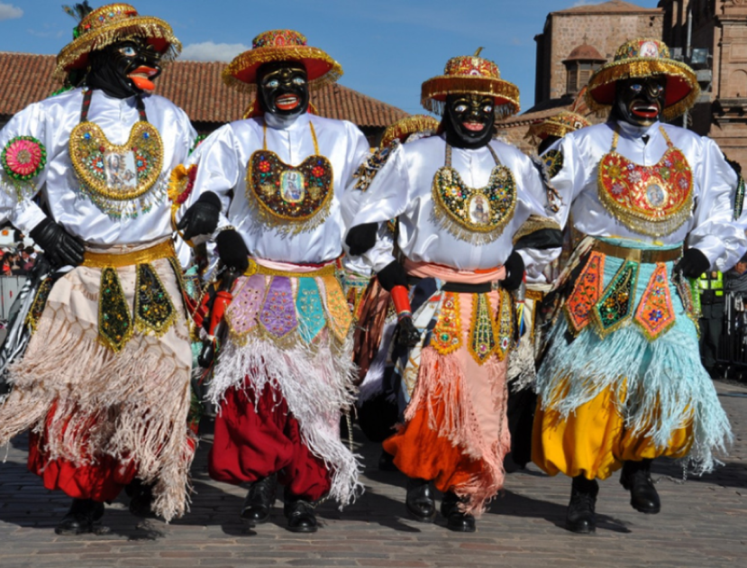
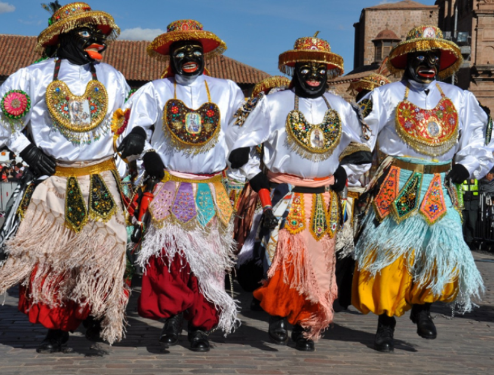
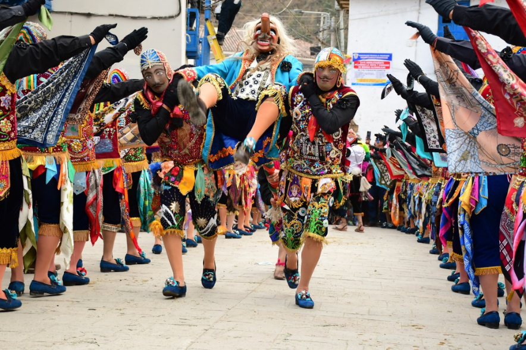
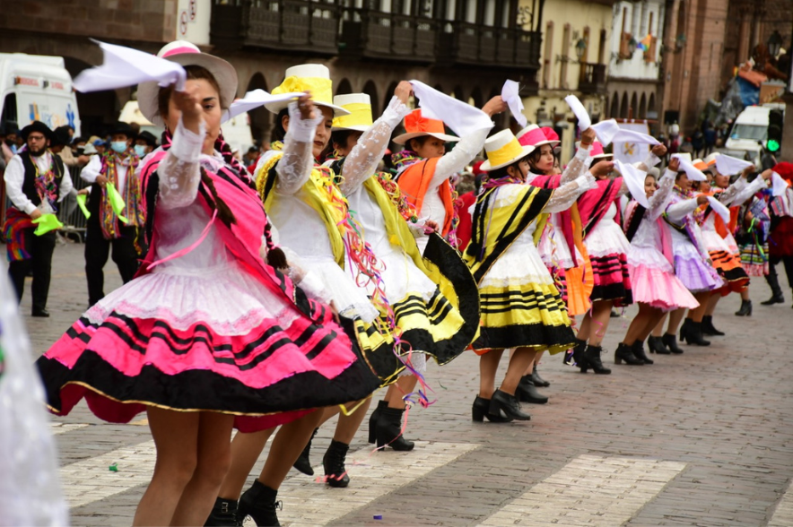

LOGO
unidos podemos hacer grandes cosas, por eso en (logo) tenemos todos los trajes disponibles de nuestro amado Perú las fiestas nos esperan!
unidos podemos hacer grandes cosas, por eso en (logo) tenemos todos los trajes disponibles de nuestro amado Perú las fiestas nos esperan!
Selva

Sierra
Costa
Trajes
Selva
Sierra
Costa
Trajes
 

Qapac Negro, cuya traducción directa del quechua significa “negro rico”, es una danza colectiva mestiza creada en la época republicana. Sus personajes representan al esclavo negro y la esclavitud que vivió en la época colonial, cuyos cantos son los sufrimientos expresados a la virgen y a la vez su devoción a ella.
Se dice que los antiguos esclavos negros, traídos de la costa y Bolivia, fueron a trabajar a Paucartambo en las minas de plata y oro y que algunos llevaron consigo la adoración que tenían por la Virgen del Carmen de Lima.
La danza está conformada por un rey negro, un par de niños y dos filas de soldados negros posicionados en paralelo y al comando de sus respectivos capitanes. La danza se divide entre los danzantes, siendo unos los que recitan sus cantos, y el grupo instrumental (arpa, quena, violín, acordeón, bombo o batería) para el tema musical.

La contradanza se trata de una danza agrícola, en donde el caporal de la comparsa introduce a los otros danzantes en lo que se refiere a las tareas del campo. Sin embargo, también puede hacer referencia a una parodia a lo que fuesen las danzas de salón bailadas por las élites españolas por aquellos tiempos de la colonia. Esto último cobra mucho sentido considerando el nombre de “contra-danza”.
La Contradanza tiene toda una historia de triunfos y sorpresas, pues han ganado premios como el Concurso Departamental de Danzas Folclóricas en 1968 y el festival del Inti Raymi en 1991. Además, su comparsa fue la primera en hacerse acreedora de un local propio en el pueblo y la primera en haberse institucionalizado, convirtiéndose en una asociación con personería jurídica inscrita en el Instituto Nacional de Cultura (1989).
En la Contradanza participan personajes como el machu (caporal), danzantes que llevan una máscara de malla metálica, y un equipo musical conformado por un violín, un acordeón, un bombo (o batería) y quenas
.png)
La danza Wallata representa la el cortejo de las aves wallatas (machos) a las wachachas (hembras) a través de la personalización de sus movimientos en forma de coreografía. Los danzantes toman como inspiración todo lo relacionado al ave para realizar dicha coreografía; gritos, movimientos, conducta, apareamiento y todo aquello que demuestre la dominancia del macho. Asimismo, las mujeres realizarían movimientos elegantes demostrando coqueteos..
El origen de la danza se ve íntimamente ligado al hombre de campo, el cual está relacionado a la naturaleza (flora y fauna) que lo rodea. En dicha fauna se encuentran las wallatas, aves palmípedas que viven en las qochas y totorales cercanos a estas comunidades.
Los danzantes se dividen en hombres y mujeres que representarán el coqueteo del ave wallata. Los varones estarán vestidos con un pantalón corto, manguetas blancas, un pequeño poncho color rojo, un chullo, una ojota y una montera circular. Las mujeres tendrán una pollera negra con una franja de color rojo, una minifalda o ukhuna, chamarra roja, montera circular, ojota y una lliclla.
La danza Cholo Qorilazo representa la algarabía de los pobladores de la zona alto andina de la región de Cusco, siendo esta la provincia de Chumbivilcas, lugar donde se originaría esta hermosa danza. Además, también simboliza la alegría que el cholo qorilazo siente al tener a su lado a la mujer que siempre lo acompaña y a su fiel caballo.
La palabra “Qorilazo” viene de la unión de “Qori”, que significa oro o dorado del quechua, y de “lazo”, que significa exactamente lo mismo al ser un término español. Entonces, la danza en sí trataría sobre el “cholo con lazo de oro”, lo cual se refiere a la unión de los habitantes de estos lugares con sus quehaceres y pasatiempos.
La danza consiste en un grupo de varones y otro de mujeres, acompañados por instrumentos de cuerda como la guitarra, el charango y la mandolina.

La danza Carnaval Cusqueño, cuyo nombre también comparte con la misma festividad, es una de las más populares de Cusco, pues cuenta con unos movimientos hermosos que realzan la elegancia y el ritmo representado por jóvenes enamorados.
Se dice que los antiguos esclavos negros, traídos de la costa y Bolivia, fueron a trabajar a Paucartambo en las minas de plata y oro y que algunos llevaron consigo la adoración que tenían por la Virgen del Carmen de Lima.
Como ya se hizo mención, en esta danza participan grupos de mujeres y varones jóvenes. La vestimenta de las mujeres comprende: faldas brillantes mestizas, blusa blanca, sombreros blancos y altos, trenzas en el cabello y pañuelo blanco. En el vestuario de los varones se puede apreciar: camisa blanca, pañuelo blanco, sombrero negro, pantalón y chaleco negro, zapatos negros y una chalina blanca. Ambos estarán llenos de serpentina y harina en sus rostros.
Qapac Negro, cuya traducción directa del quechua significa “negro rico”, es una danza colectiva mestiza creada en la época republicana. Sus personajes representan al esclavo negro y la esclavitud que vivió en la época colonial, cuyos cantos son los sufrimientos expresados a la virgen y a la vez su devoción a ella.
Se dice que los antiguos esclavos negros, traídos de la costa y Bolivia, fueron a trabajar a Paucartambo en las minas de plata y oro y que algunos llevaron consigo la adoración que tenían por la Virgen del Carmen de Lima.
La danza está conformada por un rey negro, un par de niños y dos filas de soldados negros posicionados en paralelo y al comando de sus respectivos capitanes. La danza se divide entre los danzantes, siendo unos los que recitan sus cantos, y el grupo instrumental (arpa, quena, violín, acordeón, bombo o batería) para el tema musical.
"Negro rico"
"Mañana nos burlamos del español"
"el cortejo del macho hacia la hembra"
"la felicidad abunda en los Gorilazos"
"Hoy si me enamoro"
"Hoy si me enamoro"
ES HORA DE FIESTA! NO OLVIDES DE TUS VESIMENTAS ADQUIERELAS AL PRECIO MAS COMODO Y CON MUY BUENA CALIDAD